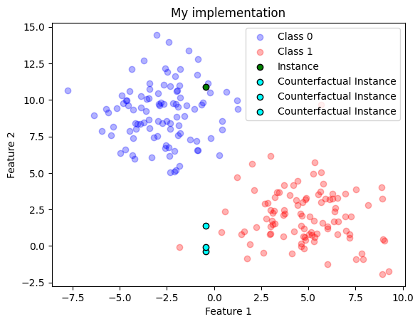

Continuing my series of post, this time I’ll provide an introdutory elucidation of Counterfactual Explanations, an interest concept that goes in the same direction of model explanation, but it is different than feature attribution methods like (Ribeiro, Singh, and Guestrin 2016) and (Lundberg and Lee 2017).
Simply speaking, according to authors from (Mothilal, Sharma, and Tan 2020), suppose that someone who tried to get a loan but got turned down by the bank’s computer system. Normally, the bank might tell them why, like “you have a bad credit history”. But this doesn’t give the person a clue about what they should do differently next time to get approved. Also, what the system flagged as most important might not even be something they can change, e.g. their gender or race. So, it’s super crucial not only to know why you got rejected, but also to see what changes could lead to a different result. This way, people can figure out what actions they could’ve taken to swing the decision in their favor.
This leads us to the definition of Counterfactual Explanations (Wachter, Mittelstadt, and Russell 2017). Using the loan example, these would show how the same person could have changed a few things to get approved for the loan. For instance, they might say “if you earned $10,000 more, you’d have gotten the loan.” Basically, these are “what-if” scenarios based on the model’s results. A big plus of these counterfactual explanations is that they’re always true to the original model since they’re just a different take on the system’s results. Plus, they can be easy for people to understand.
The caveat
Coming up with “what-if” scenarios that someone can actually do is tough. Let’s go back to the loan example. A counterfactual explanation might suggest “lower your rent”, but it doesn’t give other options or consider how hard different changes might be to pull off. That’s why we need a variety of counterfactual examples to help people wrap their heads around these complex machine learning models. Ideally, these examples should offer a range of suggestions and think about how doable those changes are.
Important
Rules should make sense with real-world rules, like, you can’t just downgrade your degree or change your race.
But what is wrong with Feature Importance methods?
Models like those mentioned in the (Ribeiro, Singh, and Guestrin 2016) and (Lundberg and Lee 2017) papers are seen as “Feature Importance” methods. They explain things by ranking the most relevant features. But here’s the thing, these explanations aren’t totally honest about what’s going on with the machine learning models. As there is always this balancing act between being true to the model and making it understandable to humans when you’re explaining a complex model, an explanation methods that use simpler stand-in models are always approximatios the real model to some extent. Therefore, one big issue with this is that because the explanations come from these simpler models, there’s no guarantee that they’re actually representing the original model accurately.
Approaching the solution
Extending the work from (Wachter, Mittelstadt, and Russell 2017), (Mothilal, Sharma, and Tan 2020) authors set up an optimization problem that looks at both the diversity of the “what-if” scenarios and how close they are to the original data, coming up with a method that generates a bunch of “what-if” scenarios. Also, they provide a set of interesting metrics for evaluating counterfactual explanations, which I believe is worthwhile to explore :)
Going Formal
So, what we’re working with here is a trained machine learning model, \(f\), and a specific case, \(x\). Our aim is to generate a group of \(k\) counterfactuals, {\(c_1, c_2, \cdots{. . .}, c_k\)}, that would lead to a different outcome than \(x\). Both \(x\) and all the CF examples (\({c_1, c_2, \cdots{. . .} , c_k}\)) are \(d\text{-dimensional}\). Throughout this paper, we’re assuming that the machine learning model is differentiable and static (it doesn’t change over time), and that the output is binary.
Our goal is to generate an actionable counterfactual set, that is, the user should be able to find CF examples that they can act upon. To do so, we need individual CF examples to be feasible with respect to the original input, but also need diversity among the generated counterfactuals to provide different ways of changing the outcome class.
Counterfactuals Generation Engine
Let’s say you have an input feature \(x\) and an output from an ML model \(f\). A counterfactual explanation is a tweak to the input that causes a different output \(y\) from the same model. Specifically, Wachter and his team came up with this idea:
In plain terms, we want the counterfactual example \(x_{cf}\) that minimizes the loss such that this instance stays relatively close to the original data point. Thefore, while the first component (yloss) drives the counterfactual \(x_{cf}\) towards a prediction that’s different from the original data point the second one (\(x - x_{cf}\)) ensures that the counterfactual stays relatively close to \(x\).
For simplicity, for now on, lets assume that \(x_{cf}=c\)
New set of metrics
As mentioned, authors from (Mothilal, Sharma, and Tan 2020) implements a new set of metrics and definitions that I am going to explain further. In other words, while having a bunch of different counterfactuals might boost the odds of finding at least one a person can act on, the examples could end up tweaking a ton of features. Or, they might go for maximum diversity by suggesting big changes from the original data. This issue could get even trickier when you’re dealing with lots of features. So, we need a mix of diversity and feasibility, which I’ll lay out next.
Diversity via Determinantal Point Processes
When it comes to diversity, we’re borrowing from something called determinantal point processes (Kulesza and Taskar 2012). These have been used to tackle subset selection problems with diversity constraints. We measure diversity with this determinant of a kernel matrix that is based on the counterfactuals:
Here, \(K_{i,j} = \frac{1}{1+dist(x_i,c_j)}\), where \(dist(c_i,c_j)\) is a way to measure the distance between two counterfactual examples. In practice, to dodge issues with undefined determinants, we add small random changes to the diagonal elements when we calculate the determinant.
If we want to have quick and dirty implementation about that, here it is 1:
Code
import numpy as npimport scipy.spatial.distance as distanceimport torchimport randomseed =42torch.manual_seed(seed)np.random.seed(seed)random.seed(seed)torch.use_deterministic_algorithms(True)def create_k_matrix(counterfactuals, distance_func, training_data, eps=1e-6):""" Creates a kernel matrix K based on counterfactuals and a given distance function. Parameters: counterfactuals (list(torch.Tensor)): A list of counterfactual candidates distance_func (function): A function to measure distance between two counterfactual examples. eps (float): A small value added to the diagonal of the matrix to avoid determinant issues. Returns: torch.Tensor: The kernel matrix K. """ num_counterfactuals =len(counterfactuals) K = torch.zeros((num_counterfactuals, num_counterfactuals))for i inrange(num_counterfactuals):for j inrange(i+1, num_counterfactuals): dist = distance_func(counterfactuals[i], counterfactuals[j], training_data) K[i, j] = K[j, i] =1/ (1+ dist)# Add small perturbations to the diagonal elements# Clone the tensor first if gradient computation is needed K = K.clone() K.diagonal().add_(eps)return K
Proximity
So, the counterfactual examples that are closest to the original data are usually the most helpful for users. We calculate proximity as the (negative) vector distance between the original data and the features of the counterfactual example. This can be figured out using a distance metric like the \(\ell_{1}\text{-distance}\) (and you can weight this by feature if you want). The proximity of a set of counterfactual examples is just the average proximity across the set.
from scipy.spatial import distancedef compute_proximity(x, c, dist_function='euclidean'):# Calculate the distance between x and each counterfactual in c distances = np.array([distance.cdist([x], [c_i], dist_function) for c_i in c])# Calculate the average proximity across the set proximity =-np.mean(distances)return proximity
Sparsity
Closely linked to proximity is the concept of sparsity: it’s about determining the number of features someone needs to alter to reach the counterfactual class. It’s intuitive that a counterfactual example will be more feasible if it modifies fewer features. As this constraint is non-convex (it doesn’t have a simple, consistent shape), we don’t include it in the loss function. Instead, we manage it by modifying the counterfactuals we generate.
def sparsity(x, c):""" Calculate the sparsity based on the given equation. Parameters: x (list): Input features. c (list): Set of counterfactuals. It should be a 2D list where each inner list is a counterfactual. Returns: float: Sparsity value. """ k =len(c) # Number of counterfactuals d =len(x) # Number of input featuresassertall(len(cf) == d for cf in c), "The size of input features and counterfactuals should match."# Calculate the sum of the indicator function indicator_sum =0for cf in c:for xi, cfi inzip(x, cf):if xi != cfi: indicator_sum +=1# Calculate the sparsity sparsity =1- (1/ (k * d)) * indicator_sumreturn sparsity
User Constraints
A counterfactual example might seem feasible if you’re just looking at the features, but real-world restrictions could make it a no-go. So, it’s a good idea to let users set some constraints on how features can be changed. These can be defined in two ways. First, as box constraints that set feasible ranges for each feature—this is where we need to look for counterfactual examples. Like, “income can’t go above 200,000”. Or, a user could just list the variables they’re okay with changing.
Optimizing everything
The authors then propose a combined loss function, \(C(x)\), that considers all generated counterfactuals:
In this equation, \(c_i\) represents a counterfactual example (CF), \(k\) is the total number of CFs we want to make, \(f(\cdot)\) is the ML model, \(yloss(\cdot)\) is a metric that shrinks the distance between \(f(\cdot)\)’s prediction for \(c_i\) and the preferred outcome \(y\), \(x\) is the initial input, and \(\text{dpp\_diversity}(\cdot)\) is the diversity metric. \(\lambda1\) and \(\lambda_2\) are hyperparameters.
Since that \(y\) is the preferable class could also be the opposite of \(f(x)\), so we can use the model’s prediction for the instance we want to explain instead of its label, but then we would need to flip its result. Moreover, author’s state that they initialize \(c_i\) randomly and optimize it via gradient descent.
One way to see this is that given a \(c_i\) random array with the same \(d\) dimensions of \(x\) and we want to learn the best set of \(k\)\(c\) arrays, we can “think” of this as some sort of single layer neural network, with \(x\) and \(f(x)\) being the label. For example, if \(k=1\), we are optmizing some sort of single “hidden layer” so that in the end we would have the counterfactuals.
Important
As the loss is going to be optimized via gradient descent and we want to learn the counterfactuals through it as we are passing it through \(f(c_i)\), the model inference function has to be differentiable. This, the blackbox model has to be something like a Neural Network or Logistic Function but not a boosted decision tree or a random forest, as decision trees are not differentiable
Let’s breakdown each element of this loss function:
\(yloss(f(c\_i), y)\): this part will try to make \(f(c_i)\) as close as possible to \(y\), that is the desired counterfactual
\(dist(c_i, x)\): will make sure that \(c_i\) is close to \(x\)
\(\text{dpp\_diversity}(c_1, \cdots, c_k)\): this part will try to diversify \((c_1, \cdots, c_k)\)
Note
The authors suggest that we implement a stop criteria based on the following rulles: - The loss stops improving at some threshold - The class found is the counterfactual one
Here is pytorch for implementing this.
import torchfrom torch.autograd import Variableimport numpy as npfrom tqdm.auto import tqdmdef detect_convergence(model_classifier, current_loss, previous_loss, y, counterfactuals, threshold =1e-3):# Calculate the change in loss change_in_loss = torch.abs(current_loss - previous_loss)# Check if the instance_to_analyze's prediction is different from all counterfactuals y_diff_all =all([y != model_classifier.predict(c_i) for c_i in counterfactuals])# Check if the change in loss is less than threshold and y is different from all counterfactualsif change_in_loss < threshold and y_diff_all:print(f"Loss converged at: {change_in_loss}, stop criteria reached")returnTruereturnFalsedef learn_counterfactuals(instance_to_analyze, lambda_1, lambda_2, yloss, distance_function, model_classifier, k, training_dataset, num_epochs=100, learning_rate=0.01):# Convert inputs to PyTorch tensors counterfactual_candidates = [torch.randn_like(instance_to_analyze, requires_grad=True) for _ inrange(k)]# Define the optimizer optimizer = torch.optim.AdamW(counterfactual_candidates, lr=learning_rate)# Gradient descent prev_loss = torch.tensor(float('inf'))for epoch in tqdm(range(num_epochs), desc="Number of epochs"): y = model_classifier.predict(instance_to_analyze) counterfactual_class = torch.tensor([1]) if y ==0else torch.tensor([0]) optimizer.zero_grad()# Compute average yloss yloss_per_ci = torch.stack([yloss(counterfactual_class, model_classifier(c_i)) for c_i in counterfactual_candidates]) avg_yloss = torch.mean(yloss_per_ci)# Compute average distance dist_per_ci = torch.stack([distance_function(c_i, instance_to_analyze, training_dataset) for c_i in counterfactual_candidates]) avg_dist = torch.mean(dist_per_ci)# Compute dpp_diversity K = create_k_matrix(counterfactual_candidates, distance_function, training_dataset) dpp_diversity = torch.det(K)# Normalize dpp_diversity by the size of K to avoid determinant being too large normalized_dpp_diversity = dpp_diversity / K.numel()# Compute the final loss loss = avg_yloss + lambda_1*avg_dist - lambda_2*normalized_dpp_diversityif detect_convergence(model_classifier, loss, prev_loss, y, counterfactual_candidates, threshold =1e-3):# this is still not workingbreak prev_loss = loss# Backpropagation loss.backward()# Update the counterfactuals optimizer.step()if epoch%10==0:print(f"Current loss: {loss}")# Return the optimized counterfactualsreturn [c_i for c_i in counterfactual_candidates]
The practice
A few practical considerations
Authors also describe a few practical considerations that I’ll be using for understanding the main idea behind the paper. Let’s dive into them
Choice of loss
At a first glance it might seem intuitive to use \(\ell_1\text{-loss}\) (\(|f(x_{cf}) − f (c)|\)) or \(\ell_2\text{-loss}\) ((\(f(x_{cf}) - f(c))^2\)) as the yloss, but this isn’t actually the best idea.
These loss functions take into account the difference between \(f(c)\) and our desired \(f(x_{cf})\) or \(y\), but what we really want for a valid counterfactual is for \(f(c)\) to be either more close than the threshold set by \(f\) such that it flips the class outcome, not necessarily the closest to our ideal \(y\) (either \(1\) or \(0\)). In fact, trying to optimize \(f(c)\) to be close to either \(0\) or \(1\) encourages bigger changes to \(x\) to fit the counterfactual class, which can result in a counterfactual that’s less feasible for a user. Because of this, we prefer to use a hinge-loss function that has no penalty as long as \(f(c)\) is above a certain threshold when the preferred class is 1 (or below a certain threshold when the preferred class is 0). It also adds a penalty that’s proportional to the difference between \(f(c)\) and the threshold when the classifier gets it right (but within the threshold), and a larger penalty when \(f(c)\) doesn’t show the desired counterfactual class. More precisely, the hinge-loss is: \[
\begin{aligned}
\text{hinge\_yloss}=max(0,1 - z*logit(f(c)))
\end{aligned}
\]
Where \(z\) is -1 when \(y = 0\) and \(1\) when \(y=1\), and \(logit(f(c))\) is the unscaled output from the ML model (e.g., final logits that enter a softmax layer for making predictions in a neural network).
import numpy as npdef hinge_yloss(y, probabilities, eps=1e-7):""" Computes the hinge loss. Parameters: eps (float): A small value to prevent log(0) when f_c is 0. """# Ensures f_c is in (0, 1) interval to prevent log(0) probabilities = probabilities.clamp(eps, 1)# Compute logit prediction_logits = torch.log(probabilities / (1- probabilities))# Determine z based on y z = torch.where(y ==0, -torch.ones_like(y), torch.ones_like(y))# Compute hinge loss hinge_loss = torch.maximum(torch.tensor(0.0), 1- z * prediction_logits)return hinge_loss
I decided to have a quick test about it.
Notice that as we need to differentiate the loss, the LogisticRegression method from sklearn wouldnt work since I dont have access to it’s derivatives or gradients (and they would be lost as I would need to convert torch.Tensor to numpy.array if I had to perform something like model.predict_proba(instance_tensor))
Therefore, I’m creating a simple LogsiticRegression in Pytorch
Code
import torchimport torch.nn as nnclass LogisticRegressionModel(nn.Module):def__init__(self, input_dim):super(LogisticRegressionModel, self).__init__()self.linear = nn.Linear(input_dim, 1)def predict(self, x, threshold=0.5):self.eval() label_probability =self(x) y = (label_probability > threshold).float()return ydef forward(self, x): out = torch.sigmoid(self.linear(x))return out
And then training it in a really dummy dataset, just for testing :)
Code
from sklearn.datasets import make_classificationfrom sklearn.model_selection import train_test_split# Generate a binary classification datasetX, y = make_classification(n_samples=100, n_features=20, n_informative=2, n_redundant=10, random_state=1)# Split into train/test setsX_train, X_test, y_train, y_test = train_test_split(X, y, test_size=0.5, random_state=1)X_train = torch.FloatTensor(X_train)X_test = torch.FloatTensor(X_test)y_train = torch.FloatTensor(y_train).view(-1, 1)y_test = torch.FloatTensor(y_test).view(-1, 1)input_dim = X_train.shape[1] # takes variable 'x' model = LogisticRegressionModel(input_dim)criterion = torch.nn.BCELoss() # Binary Cross Entropy lossoptimizer = torch.optim.SGD(model.parameters(), lr=0.1)epochs =2000for epoch in tqdm(range(epochs), desc="Training Logistic Regression"): model.train() optimizer.zero_grad()# Forward pass y_pred = model(X_train)# Compute Loss loss = criterion(y_pred, y_train)# Backward pass and update loss.backward() optimizer.step()# print progressif (epoch+1) %500==0:print(f'epoch: {epoch+1}, loss = {loss.item()}')
epoch: 500, loss = 0.06291789561510086
epoch: 1000, loss = 0.04198703169822693
epoch: 1500, loss = 0.031998444348573685
epoch: 2000, loss = 0.025996342301368713
Code
# Create a sample instancex = X_test[0].reshape(1, -1)result = hinge_yloss(model.predict(x), model(x))# Call the hinge_yloss functionprint(f"Hinge loss for a test case: {result}")
Hinge loss for a test case: tensor([[0.9653]], grad_fn=<MaximumBackward0>)
It seems to have worked :)
Distance function
When dealing with continuous features, we define the ‘dist’ function as the average of feature-wise \(\ell_1\) distances (or Manhattan distance) between the counterfactual example and the original input, as suggested by (Wachter, Mittelstadt, and Russell 2017). However, it’s worth noting that features can cover different ranges. So, to make sure we account for this, we divide each feature-wise distance by the median absolute deviation (MAD) of that feature’s values from the training set. This approach follows what was done in the paper by (Wachter, Mittelstadt, and Russell 2017). By looking at how much a feature deviates from the median, we can get a reliable measure of how variable a feature’s values are. So, dividing by the MAD lets us see how common it is to find the feature at a specific value. Mathematically, this can be represented as follows:
Here, \(d_{cont}\) stands for the number of continuous variables and \(MAD_p\) is the median absolute deviation for the \(p\text{-th}\) continuous variable, |c^p - x^p| is the Manhattan distance (\(\ell_1\) distance) between a counterfactual vector and the instance we are analyzing
import torchdef median_abs_deviation(x):""" Compute the Median Absolute Deviation (MAD) of a tensor along an axis. As I need to have access through tensors, this is necessary to be used instead of scipy function Parameters: x (torch.Tensor): The input tensor. Returns: torch.Tensor: The computed MAD values. """ median = torch.median(x, axis=0)[0] mad = torch.median(torch.abs(x - median), axis=0)[0]return maddef dist_continuous(c, x, training_data):""" Compute the distance function for continuous features. We are assuming that training data contains only continuous features Parameters: c (torch.Tensor): A counterfactual example. x (torch.Tensor): The original input instance. training_data (torch.Tensor): The training dataset. Returns: float: The computed distance. """ d_cont = x.shape[0]# Compute MAD values for each feature mad_values = median_abs_deviation(training_data) abs_diff = torch.abs(c - x) normalized_diff = abs_diff / mad_valuesreturn torch.sum(normalized_diff) / d_cont
And then a quick test :)
Code
from scipy.stats import median_abs_deviation as mad_np#first lest see if the MAD implementation is correctdata_np = np.random.rand(100, 5)data_torch = torch.tensor(data_np, dtype=torch.float)# Calculate MAD with both functionsmad_scipy = mad_np(data_np, axis=0)mad_torch = median_abs_deviation(data_torch).numpy()assert np.allclose(mad_scipy, mad_torch, atol=1e-1)# Get the number of featuresnum_features = X_train.shape[1]# Define a counterfactual and an original instance with the correct number of featuresc = np.random.rand(num_features)x = np.random.rand(num_features)# Compute the distancedistance = dist_continuous(torch.tensor(c, requires_grad=True), torch.tensor(x), X_train)print(distance)
Authors also defined metrics and evaluations for categorical features, but I decided to skip them since this would give more details that could deviate from the main algorithm. If you want to check, please see the original paper (Mothilal, Sharma, and Tan 2020)
Scaling features
Typically, continuous features can take on a broad variety of values, while categorical features are often constrained to a one-hot binary representation. It’s important to keep in mind that the scale of a feature can significantly influence its importance in our objective function. The authors provide to the users interactive interfaces where they can express their preferences for different features. However, as a reasonable starting point, we opt to transform all features to fall within the range of [0, 1].
Therefore, for implementation purposes, I’ll be using StandardScaler for this example
Hyperparameters
The process of generating counterfactuals happens after the machine learning model has been trained, and so, as suggested in (Wachter, Mittelstadt, and Russell 2017), it’s not strictly necessary to use the same hyperparameters for each original input. However, because hyperparameters can significantly impact the counterfactuals that are produced, it could be problematic to present users with counterfactuals that were generated using different hyperparameters. In this study, the authors opted for \(\lambda_1 = 0.5\) and \(\lambda_2 = 1\).
Getting real
Let’s use the same dummy dataset that I used for Anchors example. There are a few differences, however: - We will be creating a SimpleNeuralNetwork classifier and we will use it as our blackbox model - We will be using StandardScaler to scale our features
Code
import numpy as npimport matplotlib.pyplot as pltfrom sklearn.datasets import make_blobsfrom sklearn.preprocessing import StandardScalerfrom sklearn.model_selection import train_test_splitclass SimpleNet(nn.Module):def__init__(self, input_size, hidden_size):super(SimpleNet, self).__init__()self.fc1 = nn.Linear(input_size, hidden_size)self.relu = nn.ReLU()self.fc2 = nn.Linear(hidden_size, 1)self.sigmoid = nn.Sigmoid()def predict(self, x, threshold=0.5):self.eval()# Ensure x is a 2D tensor: add an extra dimension if x is a 1D tensoriflen(x.shape) ==1: x = x.unsqueeze(0) label_probability =self(x) y = (label_probability > threshold).float()return ydef forward(self, x): x =self.fc1(x) x =self.relu(x) x =self.fc2(x) x =self.sigmoid(x)return x# Generate a 2D dataset with two classesX, y = make_blobs(n_samples=200, centers=2, random_state=42, cluster_std=2.0)X_train, X_test, y_train, y_test = train_test_split(X, y, test_size=0.3, random_state=42)std_features = StandardScaler()std_features.fit(X_train)
StandardScaler()
In a Jupyter environment, please rerun this cell to show the HTML representation or trust the notebook. On GitHub, the HTML representation is unable to render, please try loading this page with nbviewer.org.
StandardScaler()
And then train the network
Code
import torch.optim as optim# Define network parametersinput_size = X_train.shape[1]hidden_size =5# Instantiate the network, loss function, and optimizernet = SimpleNet(input_size, hidden_size)criterion = nn.BCELoss()optimizer = optim.SGD(net.parameters(), lr=0.1)epochs =2000for epoch in tqdm(range(epochs), desc="Training Neural Net"): net.train() optimizer.zero_grad()# Forward pass y_pred = net(torch.from_numpy(std_features.transform(X_train).astype(np.float32)))# Compute Loss loss = criterion(y_pred, torch.from_numpy(y_train.reshape(-1, 1).astype(np.float32)))# Backward pass and update loss.backward() optimizer.step()# print progressif (epoch+1) %500==0:print(f'epoch: {epoch+1}, loss = {loss.item()}')
epoch: 500, loss = 0.009603435173630714
epoch: 1000, loss = 0.005159247666597366
epoch: 1500, loss = 0.0036031161434948444
epoch: 2000, loss = 0.0027885879389941692
from sklearn.metrics import accuracy_scorepredictions = net.predict(torch.from_numpy(std_features.transform(X_test).astype(np.float32))).numpy().reshape(-1)accuracy_score(y_test, predictions)
1.0
It was pretty easy to get a perfect model, which was expected.
Then, now I want to explain a single instance from test set. Let’s take the first element :)
Code
instance_to_explain = np.where(X==X_test[0])[0][0]assert (X[instance_to_explain]==X_test[0]).all()def plot_dataset_with_instance(X, y, highlight_row=None, counterfactual_instance_list=None, title="Dataset"):# Assuming you have two classes 0 and 1 class_0 = X[y ==0] class_1 = X[y ==1]# Create a scatter plot for each class plt.scatter(class_0[:, 0], class_0[:, 1], c='blue', label='Class 0', alpha=0.3) plt.scatter(class_1[:, 0], class_1[:, 1], c='red', label='Class 1', alpha=0.3)if highlight_row isnotNone: plt.scatter(X[highlight_row, 0], X[highlight_row, 1], c='green', label='Instance', alpha=1, marker='o', edgecolors='k')if counterfactual_instance_list isnotNoneandisinstance(counterfactual_instance_list, list):for counterfactual_instance in counterfactual_instance_list: plt.scatter(counterfactual_instance[0], counterfactual_instance[1], c='cyan', label='Counterfactual Instance', alpha=1, marker='o', edgecolors='k') plt.xlabel('Feature 1') plt.ylabel('Feature 2') plt.title(title)# Add a legend to the plot plt.legend() plt.show()# Pass in the index of the row you want to highlightplot_dataset_with_instance(X, y, highlight_row=instance_to_explain)
Therefore, we want to find the set of candidates that makes the green instance becomes red. For that, then let’s use the learn_counterfactuals defined earlier with the following consierations:
\(x=\) the same instance that we are trying to get the counterfactuals, transformed from std_features
\(\text{yloss}\) is the hinge_loss that we defined earlier
\(\text{distance\_function}\) is the \(\text{distance\_continuous}\) that was defined earlier
\(\text{lambda\_1}=\lambda_1=0.5\)
\(\text{lambda\_2}=\lambda_2=2.0\)
\(\text{model\_predict}\) will be our net model which we just trained
\(k=3\), so we are trying to learn a three counterfactual
Current loss: 0.6136817932128906
Current loss: 0.20534832775592804
Current loss: 0.1759258359670639
Loss converged at: 0.0008479952812194824, stop criteria reached
counterfactual_instances_scaled_back = []for single_counterfactual in learnt_counterfactuals: counterfactual_instances_scaled_back.append(std_features.inverse_transform(single_counterfactual.detach().numpy())[0])
plot_dataset_with_instance(X, y, highlight_row=reference_instance, counterfactual_instance_list=counterfactual_instances_scaled_back, title="Initial Dataset")
Figure 1: Dataset with Learnt Counterfactual Instances
Performing Adjustment
Enhancing Sparcity
The loss function aims to minimize the distance between the input and the generated counterfactuals. However, an ideal counterfactual should change as few features as possible to maintain its sparsity considering the feasibility definition. To promote this sparsity, the authors implemented a post-processing step where they revert the values of continuous features back to their original values in \(x\), proceeding greedily until the predicted class \(f(c)\) changes. For this step, they consider all continuous features \(c^j\) where the difference from \(x^j\) is below a chosen threshold. Although the median absolute distance (\(MAD\)) may seem like an intuitive threshold, it can be rather large for features with high variance. Thus, for each feature, they choose the lower value between the \(MAD\) and the 10 percentile of the absolute difference between non-identical values from the median.
import torchdef post_hoc_adjustment(c_list_original, instance_to_explain, model, X_train, std_features):""" Post-hoc filtering to promote sparsity in the counterfactuals. Parameters: c_list_original (List[torch.Tensor]): A list of counterfactual unscaled. instance_to_explain (torch.Tensor): The original input instance unscaled. model: The machine learning model that we are trying to explain. X_train_scaled (torch.Tensor): The training dataset unscaled. Returns: List[torch.Tensor]: The list of sparse counterfactuals unscaled. """# Calculate MAD values for each feature mad_values = median_abs_deviation(X_train)# Calculate the 10th percentile of absolute differences from the median p10_values = torch.quantile(input=torch.abs(X_train - torch.median(X_train)), q=0.10, dim=0)# Choose the lower value between the MAD and the 10th percentile for each feature thresholds = torch.minimum(mad_values, p10_values)# Prepare a container for sparse counterfactuals c_sparse_list = []for original_counterfactual in c_list_original:# Calculate the absolute differences between the counterfactual and the original instance scale_c = std_features.transform(original_counterfactual.detach().numpy().reshape(1,-1)).astype(np.float32) scale_x = std_features.transform(instance_to_explain.detach().numpy().reshape(1,-1)).astype(np.float32) abs_diff = torch.abs(torch.from_numpy(scale_c) - torch.from_numpy(scale_x))# Create a list of indices ordered by the absolute differences ordered_indices = torch.argsort(abs_diff)# Copy the counterfactual to avoid modifying the original c_sparse = original_counterfactual.clone()# Revert each feature until the predicted class changesfor idx in ordered_indices[0]:if abs_diff[0][idx] < thresholds[idx]: c_sparse_tmp = scale_c c_sparse_tmp[0][idx] = scale_x[0][idx]if model.predict(torch.from_numpy(c_sparse_tmp)) != model.predict(torch.from_numpy(scale_c)):break c_sparse[0][idx] = instance_to_explain[idx] c_sparse_list.append(c_sparse)return [counterfactual_sparse[0].detach().numpy() for counterfactual_sparse in c_sparse_list]
Lets do the post processing and then compare the plots
We can see from this plot that if we just move Feature 2 and keep Feature 1 constant, we can achieve three different counterfactuals, that is, we have found the feature changes that modify the class result! :)
Give me a real use case :)
For using a real library, let’s rely on DiCE project
Query instance (original outcome : 0)
Diverse Counterfactual set (new outcome: 1.0)
Feature 1
Feature 2
label
0
-0.447199
10.876846
0.0
Feature 1
Feature 2
label
0
-0.000100
0.188946
1
1
0.389938
0.612188
1
2
0.634860
1.000000
1
Let’s plot the results comparing my implementation and DiCE one
(a)

(b)
(c)
Figure 3: ?(caption)
Note
There can be many reasons for the DiCE results being different than the ones that I achieved, but they look close :) I suspect that could be tiny details in the post processing part that I might have missed
A real case indeed
Let’s use the same dataset example that I’ve used in Anchors Example.
However, one caveat here though is that we require binary classes only. For that, I will merge N,NE into a single group, N and S,SE into another group, S and I’ll drop CO
In a Jupyter environment, please rerun this cell to show the HTML representation or trust the notebook. On GitHub, the HTML representation is unable to render, please try loading this page with nbviewer.org.
StandardScaler()
Code
# Define network parametersinput_size = X_train.shape[1]hidden_size =5# Instantiate the network, loss function, and optimizernet = SimpleNet(input_size, hidden_size)criterion = nn.BCELoss()optimizer = optim.AdamW(net.parameters(), lr=0.001, weight_decay=0.01)epochs =20000for epoch in tqdm(range(epochs), desc="Training Neural Net"): net.train() optimizer.zero_grad()# Forward pass y_pred = net(torch.from_numpy(std_features.transform(X_train.values).astype(np.float32)))# Compute Loss loss = criterion(y_pred, torch.from_numpy(encoded_labels_train.reshape(-1, 1).astype(np.float32)))# Backward pass and update loss.backward() optimizer.step()# print progressif (epoch+1) %4000==0:print(f'epoch: {epoch+1}, loss = {loss.item()}')
epoch: 4000, loss = 0.193984717130661
epoch: 8000, loss = 0.17410410940647125
epoch: 12000, loss = 0.1702796220779419
epoch: 16000, loss = 0.16826167702674866
epoch: 20000, loss = 0.16802458465099335
Code
from sklearn.metrics import confusion_matrix, ConfusionMatrixDisplaynet.eval()predicted_classes = net.predict(torch.from_numpy(std_features.transform(X_test.values).astype(np.float32)))cm = confusion_matrix(encoded_labels_test, predicted_classes.detach().numpy(), normalize='true')# Display the confusion matrixdisp = ConfusionMatrixDisplay(confusion_matrix=cm, display_labels=encoder.classes_)disp.plot(cmap='Blues')plt.title("Confusion Matrix for the Test Set")plt.show()
Figure 5: Test Confusion Matrix for Geography Example
Not so bad :)
Let’s see how a counterfactual would be. In the example case I will chose a North class prediction and I want to find counterfactuals that would change it to South class
As we compare to Figure 4, it is possible to validate that the results actually makes sense :)
Note
It is interesting to notice that the learned counterfactuals seem to be in the decision boundary frontier, which is an expected behavior!
Conclusion
This concludes our journey to explain Diverse Counterfactuals Explanation algorithm, which is one of many model-specific explanation :)
References
Kulesza, Alex, and Ben Taskar. 2012. “Determinantal Point Processes for Machine Learning.”Foundations and Trends® in Machine Learning 5 (2–3): 123–286. https://doi.org/10.1561/2200000044.
Lundberg, Scott M, and Su-In Lee. 2017. “A Unified Approach to Interpreting Model Predictions.” In Advances in Neural Information Processing Systems 30, edited by I. Guyon, U. V. Luxburg, S. Bengio, H. Wallach, R. Fergus, S. Vishwanathan, and R. Garnett, 4765–74. Curran Associates, Inc. http://papers.nips.cc/paper/7062-a-unified-approach-to-interpreting-model-predictions.pdf.
Mothilal, Ramaravind K, Amit Sharma, and Chenhao Tan. 2020. “Explaining Machine Learning Classifiers Through Diverse Counterfactual Explanations.” In Proceedings of the 2020 Conference on Fairness, Accountability, and Transparency, 607–17.
Ribeiro, Marco Tulio, Sameer Singh, and Carlos Guestrin. 2016. “"Why Should I Trust You?": Explaining the Predictions of Any Classifier.”CoRR abs/1602.04938. http://arxiv.org/abs/1602.04938.
Wachter, Sandra, Brent D. Mittelstadt, and Chris Russell. 2017. “Counterfactual Explanations Without Opening the Black Box: Automated Decisions and the GDPR.”CoRR abs/1711.00399. http://arxiv.org/abs/1711.00399.
Footnotes
As always, ChatGPT is being a true “friend” when creating these boilerplate code :)↩︎